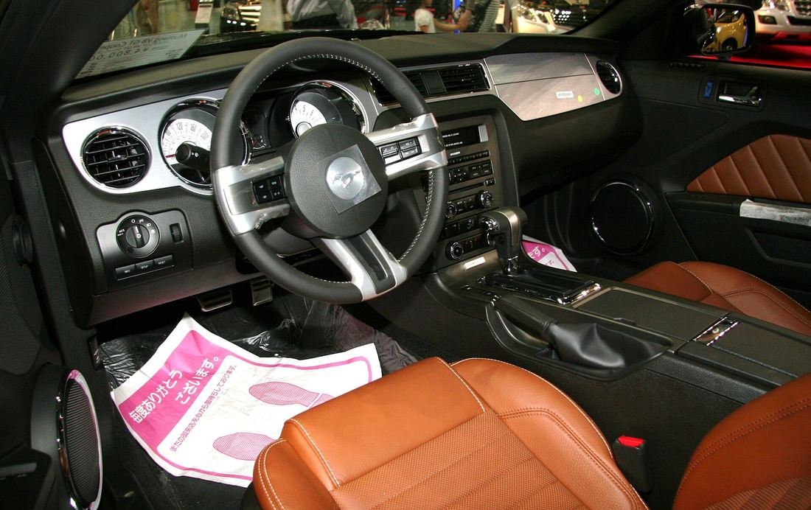

Σχεδίαση
Μακρύ καπό, κοντή ουρά και επιθετική σιλουέτα. Μια αναλογία που έμεινε αναλλοίωτη σε κάθε γενιά του μοντέλου.
1964 — ΣΗΜΕΡΑ
Το αυτοκίνητο που άλλαξε για πάντα την αμερικανική αυτοκίνηση και έγινε σύμβολο ελευθερίας, δύναμης και νεανικής κουλτούρας.
Διαβάστε την ιστορίαΠαρουσιάστηκε στις 17 Απριλίου 1964 στη Νέα Υόρκη και μέσα σε λίγους μήνες είχε γίνει το πιο συζητημένο αυτοκίνητο της Αμερικής. Το Mustang δεν ήταν απλώς ένα νέο μοντέλο: δημιούργησε ολόκληρη κατηγορία αυτοκινήτων, τα λεγόμενα pony cars, και εξακολουθεί να παράγεται μέχρι σήμερα, περισσότερα από εξήντα χρόνια αργότερα.
Μακρύ καπό, κοντή ουρά και επιθετική σιλουέτα. Μια αναλογία που έμεινε αναλλοίωτη σε κάθε γενιά του μοντέλου.
Από τον μικρό εξακύλινδρο του 1964 μέχρι τον σημερινό V8 των 5.0 λίτρων, το Mustang πάντα προσέφερε δύναμη σε προσιτή τιμή.

Πάνω από 500 ταινίες και τραγούδια το αναφέρουν. Από το «Bullitt» μέχρι σήμερα, το Mustang είναι μέρος της ποπ κουλτούρας.
Το μυστικό της επιτυχίας του Mustang ήταν η ιδέα του Λι Ιακόκκα: ένα σπορ αυτοκίνητο με εμφάνιση κούπας, χώρο για τέσσερα άτομα και τιμή που να το αντέχει ο μέσος αγοραστής. Η αρχική τιμή πώλησης ήταν περίπου 2.368 δολάρια, όταν τα αντίστοιχα σπορ αυτοκίνητα κόστιζαν πολύ περισσότερο.
Η υποδοχή ήταν εντυπωσιακή: την πρώτη ημέρα παρουσίασης καταγράφηκαν περισσότερες από 22.000 παραγγελίες, ενώ την πρώτη χρονιά πουλήθηκαν πάνω από 400.000 αυτοκίνητα. Το 2018 η Ford γιόρτασε το 10.000.000ό Mustang που κατασκευάστηκε.
Σήμερα το Mustang παραμένει το τελευταίο μεγάλο αμερικανικό muscle car σε παραγωγή και το μοναδικό που προσφέρεται ακόμη με V8 κινητήρα σε προσιτή κατηγορία τιμής.
Το όνομα «Mustang» προέρχεται από το αμερικανικό μαχητικό αεροσκάφος P-51 Mustang του Β′ Παγκοσμίου Πολέμου. Το άλογο στο λογότυπο ήρθε αργότερα και έγινε το πιο αναγνωρίσιμο σύμβολο της Ford.